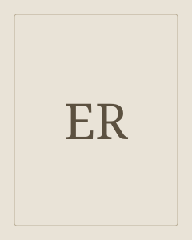

Erasmus Rotterdamilainen
Ironinen puhe koettelee oppineisuuden ja vallan itsevarmuutta.
Erasmus Rotterdamilainen oli kristillisen humanismin keskeinen oppinut. Hän yhdisti klassisten tekstien tuntemuksen uskonnon, kasvatuksen ja ihmiselämän tarkasteluun.
Etsi teokset kirjastostaElämä ja teokset
Erasmus kirjoitti laajasti ja vaikutti eurooppalaisessa oppineiden verkostossa. Hänen ajattelussaan antiikin perintö ja kristillinen elämäntapa kohtasivat. Tyhmyyden ylistys kuuluu hänen tunnetuimpiin teoksiinsa.
Tyyli ja teemat
Tyhmyyden oma puhe tekee ylistyksestä moniselitteistä. Kertojaa ei voi samastaa suoraan kirjailijaan. Pilkka kohdistuu sekä yhteiskunnallisiin asemiin että ihmisten yhteiseen taipumukseen nähdä itsensä liian suotuisassa valossa.
Ironia · Oppineisuus · Itsepetos
Aloita tästä
Tyhmyyden ylistys
Tyhmyys astuu puhujan paikalle ja esittelee vaikutustaan ihmisten elämässä. Erasmuksen ironinen puhe tutkii oppineisuutta, valtaa, uskontoa ja ihmisen taipumusta itsepetokseen.
Milloin Tyhmyyden ylistys muuttuu kuulijaan kohdistuvaksi kritiikiksi?